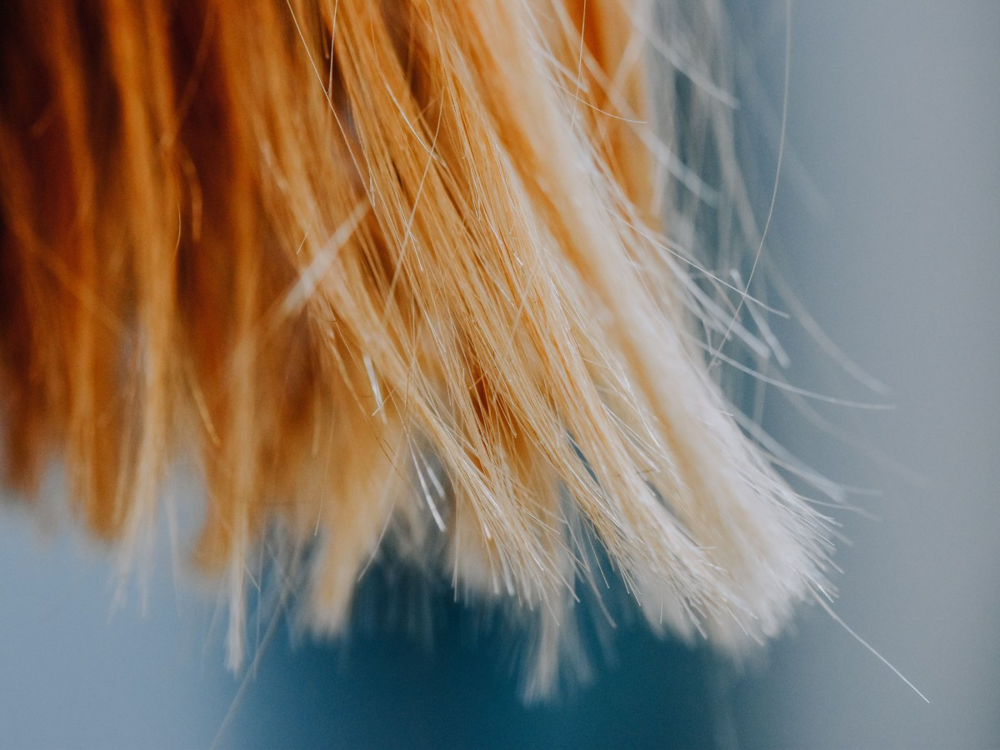
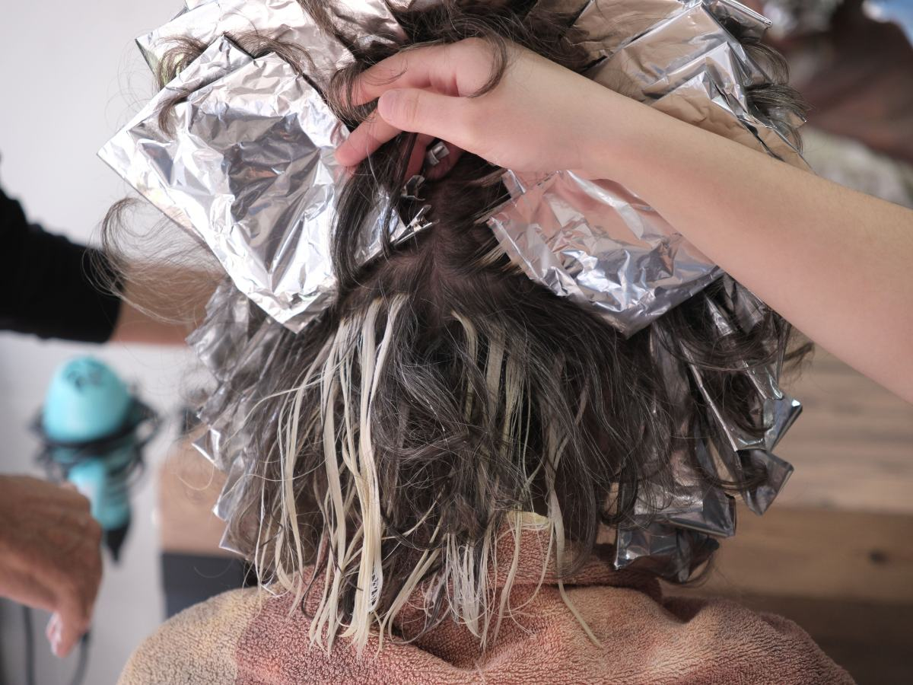
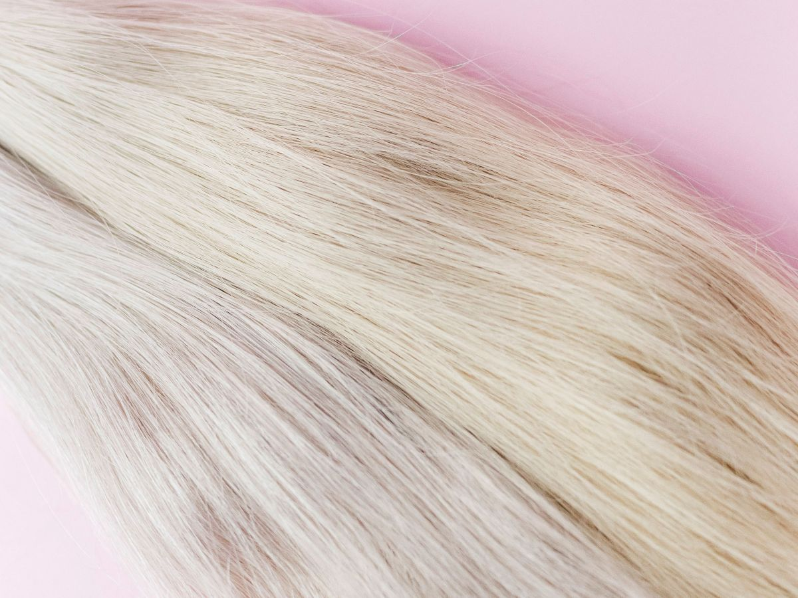
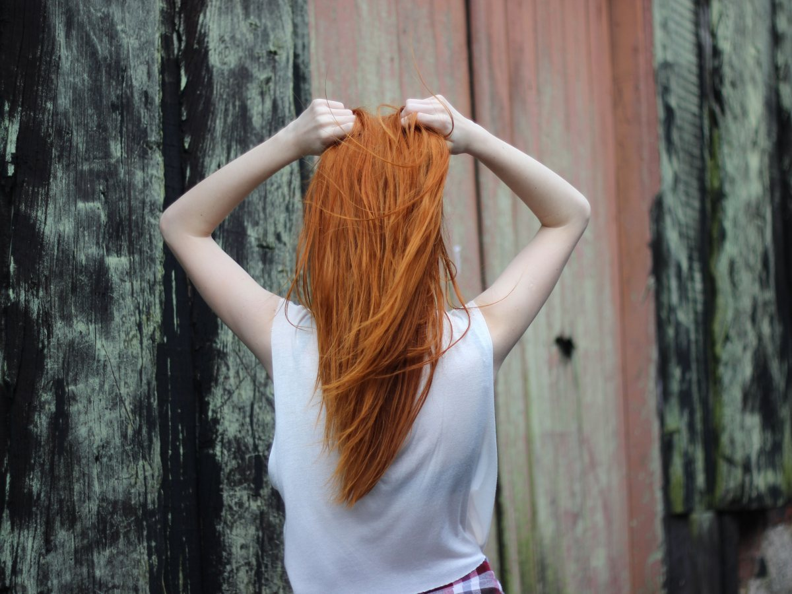
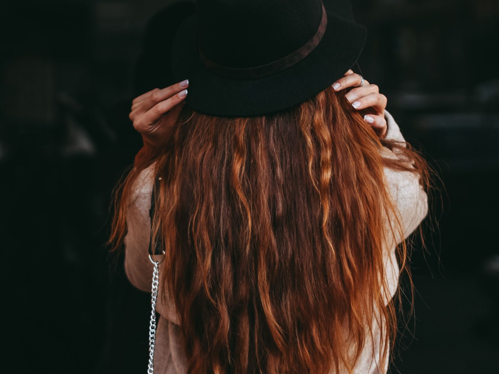
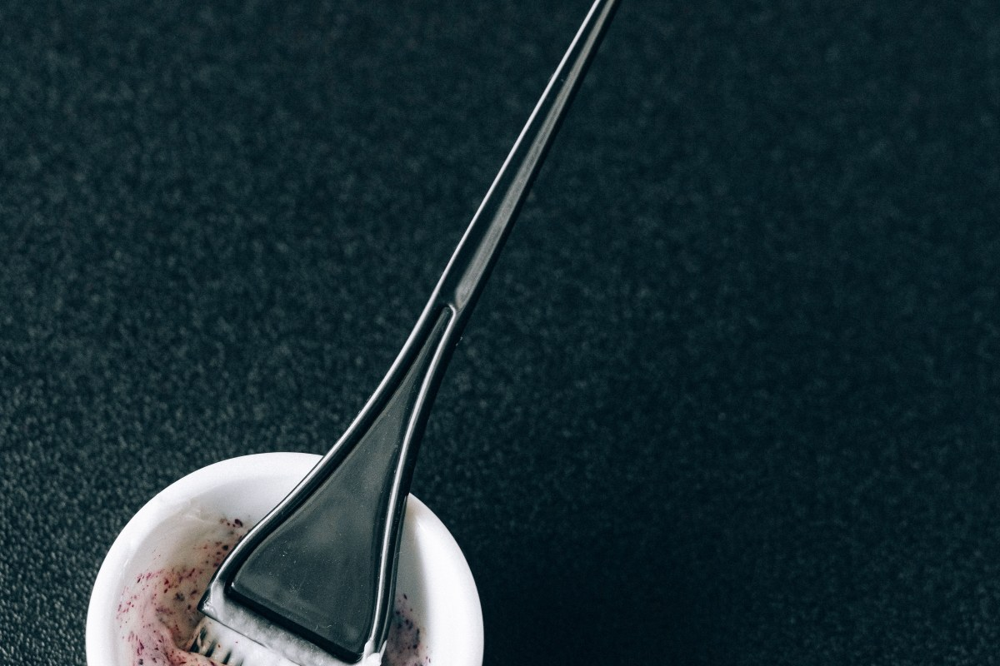
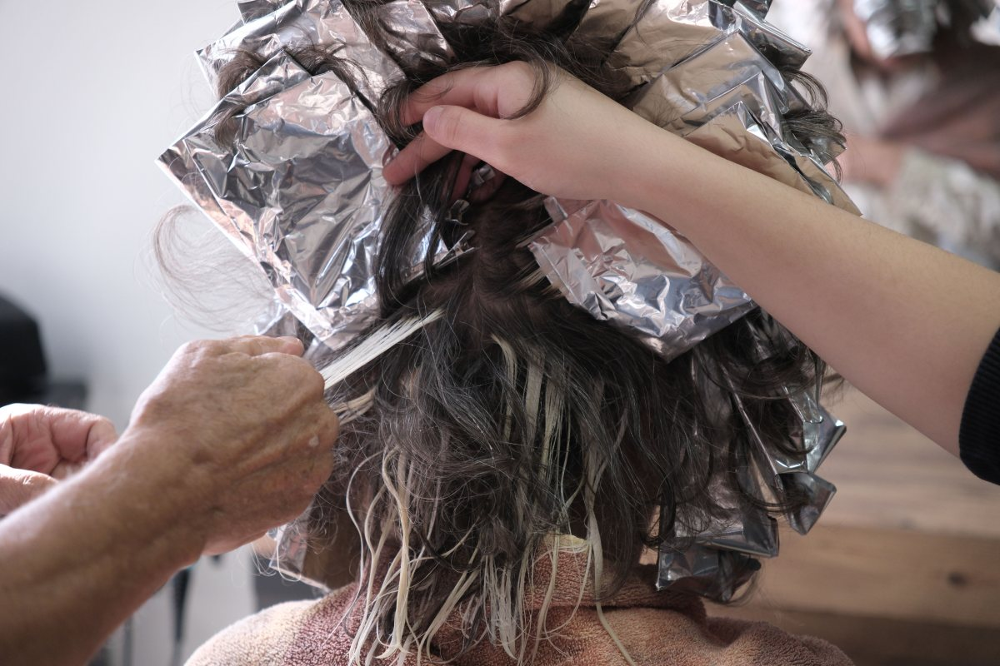
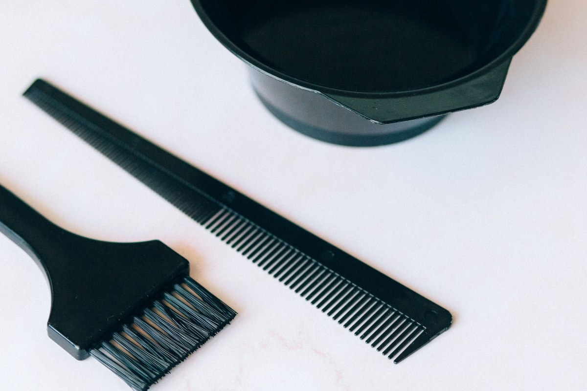
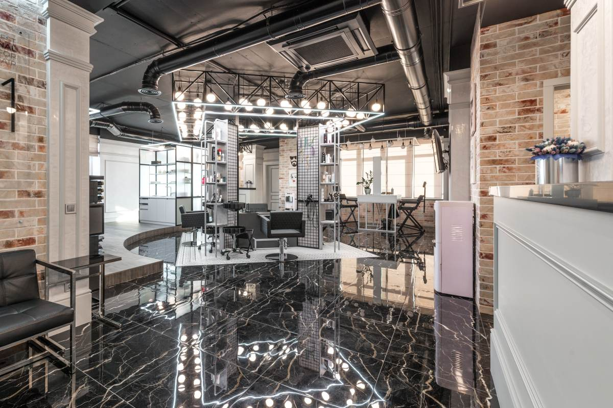
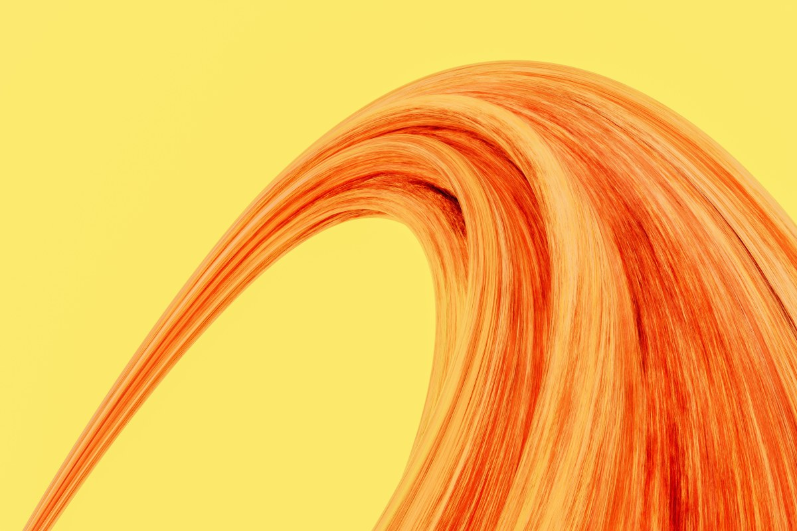

Ñuñoa · estudio de color
La foto que traes
5,0 con 63 reseñas. Cómo elegir la foto para que el color salga como lo imaginaste.
- 5,0de promedio en Google
- 63reseñas
- 10:00abre de lunes a viernes
- 0páginas: 2.640 seguidores en Instagram y ninguna web
Antes de sentarte
La foto que traes
Cinco cosas que tiene una buena foto de referencia. Responde y te decimos si sirve.
- Con luz naturalDe día y cerca de una ventana. La luz del baño cambia el tono.
- Sin filtroNi de la app ni de la cámara: el brillo engaña.
- De frente y de espaldasPara ver raíz, medios y puntas.
- Con la raíz a la vistaAhí se lee tu base: oscura, teñida o con canas.
- Pelo seco y sueltoMojado se ve más oscuro de lo que es.
Manda tu foto y la de referencia.Se conversa antes de empezar: qué cambia según tu base y cuánto se puede acercar.
Mandar las fotosEl color se conversa. Después se hace.
Qué hacen
Técnicas de color
-
01
Balayage
Luz pintada a mano.
-

02
Babylights
Mechas finas, como de sol.
-

03
Mechas
Con papel, sección por sección.
-

04
Matiz
El tono final, sin amarillo.
-

05
Corrección
Cuando el color anterior no salió.
-

06
Corte y secado
Para lucir el color.
Técnicas de ejemplo; en Instagram se presentan como coloristas.
Sesenta y tres reseñas con 5,0 y 2.640 seguidores. Quien busca «colorista Ñuñoa» en Google no llega a ninguna página suya.
Google e Instagram, al 17-09-2026
Del rubro
Lo que pasa en un estudio de color





Fotos de referencia: ninguna es de Croma.
Dónde está
En Ñuñoa
- Dirección
- Pedro Hemrick Ling 916, Ñuñoa
- +56 9 6556 8521
- Horario
- Lunes a viernes 10:00–19:00, según Google
- @cromaestudiog
El horario de fin de semana de su ficha —sábado hasta las 0:00, domingo «de 0:00 a 7:00»— parece un error de carga.
Pedro Hemrick Ling 916 Abrir en Google Maps
Para Croma
Qué es real y qué falta
Lo verificado
El 5,0 con 63 reseñas, la dirección, el WhatsApp, el horario de semana y el Instagram con 2.640 seguidores y 270 publicaciones.
Lo de ejemplo
Los cinco puntos de la foto, las técnicas y todas las fotos.
Lo que falta
Corregir el horario de fin de semana en Google, y un dominio: cromaestudio.cl está tomado desde 2021 y no responde; croma.cl es de una imprenta.